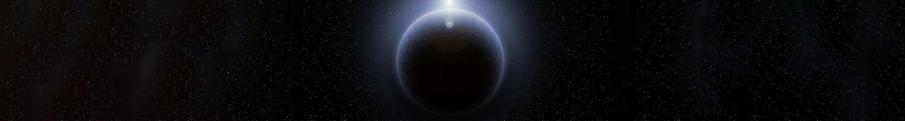
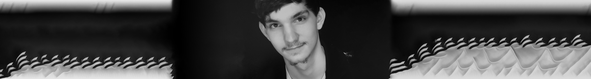

Early Works
Initially I was not even moderately interested in computer science. At the beginning of my tenth grade year at Collegiate Academy I had a web design class
that wasn't even a little helpful. The teacher played on his phone and left us to our own devices, I worked through it and while it was certainly not my best
experience, It wasn't my worst. In that time I designed probably ten to twenty simple webpages. My junior year at Erie High School proved to be better
in terms of my interest in programming. At the time I was very interested in game design and joined the class "Intro to Computer Science". Initally we worked on
designing webpages, which I became proficient at due to my previous limited experience. The teacher for the class was Jordan Lander who pushed me to go farther
when he saw me taking a lead and going ahead. A few weeks into the quarter I finished the entire curriculum for that course and moved on to another course called
"Computer Science Principles" which was also simple and I finished in days. Following this I came to my most impressive accomplishment in which to aid in my work on
a project, I navigated through the entire advanced design course in a week and better than that I finished AP Computer Science in three weeks and as of the year of writing
this webpage I have now recieved credit for my work. I became obsessed with programming and design through these endeavors.
Project Vibe
Project Vibe was built for the sole intention of helping people. Unfortunately it never came to fruition for better or worse and it is now unfunded.
This category is designated for web design but I believe it's important to look at what Project Vibe started as. Project Vibe started as a
JavaScript based app built on code.org. It then moved to a Squarespace webpage with embedded code rather than just straight design. Having said what the website and
the app were made of, what is more important is what they aimed to accomplish.
Project Vibe was a project I started for the Pennsylvania Governer's Invention Competition. It was an attempt to educate and inform people, especially
teens, about mental disorders such as depression, anxiety, and eating disorders among many others. The website and the app featured surveys that allowed users
not to self-diagnose necessarily, but to identify symptoms tied to particular mental disorders. I started building the app on my own and by the time I had recruited Desiree
Adams, Justice Wickham, and Kristina Wagner to assist in the project, I had finished the app itself with over 2500 lines of JavaScript and though the methods weren't extraordinarily
advanced, the process was a good introduction to programming in particular, but also design in a minor way. We introduced the app to the competition as a compilation of related
information to mental disorders
BR3: Royal Rewards Program
The BR3: Royal Rewards Program was a failure in all aspects. One should never be afraid to admit failures when they come around and there's no other word
for what happened. I was recruited at the end of my Junior year to work over the summer on a rewards program for Erie High School to incentivize students to behave in exchange
for a sort of rewards system, after all Erie High School has been notorious in the past three years of its existence for having students who are habitually truant, violent
and just all around rude (The school exprienced some mild reform this past year). The website was never even uploaded and I realized that I was no "Genius" when it came to
web design and the internet can't teach you everything. That being said, the website was fully structured though never fully functional when it was shut down my the new Administrator
over the school along with some high ranking educators for fear that it would give me too much power. Concerns noted, I shut down development.
Despite some obvious shortcomings The BR3: Royal Rewards Program actually holds a very special place in my heart. It did several things to me. Most importantly, I don't know
everything and even though the internet can teach you alot of things, it can't teach you everything hence why I will be attending Cleveland State University in the fall.
Another important teaching moment in this experience is that the idea and the motivation are far more important than the execution. I want good things for Erie High School,
and so I hoped we could initiate a rewards system in which you could earn points that would be uploaded to your phone and you could use these to order items from the school store
among many other ideas that I hoped to make a reality.
CMCN Exoplanetary Catalog
I love space. To be less eloquent for a moment, space is awesome. In my opinion, the easiest things to understand about space and certainly some of the most
interesting are exoplanets. Exoplanets are planets that are outside our solar system but by definition must orbit a star.

Work in Progress
This Website

Work in Progress
Current Projects
Work in Progress